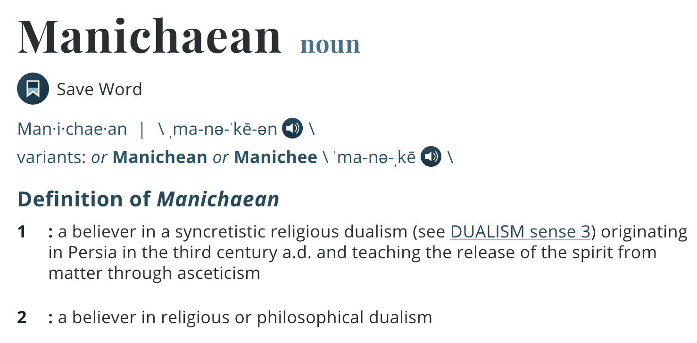

Augustine of Hippo
13 November 354 – 28 August 430 AD
A theologian, philosopher, and the bishop of Hippo Regius in Numidia, Roman North Africa.
Not Augustus (27 BC to 19 AD)

Where is Hippo Regius?
Prolific Writer
- Confessions
- City of God
- On Christian Doctrine
- ... many others
Pear Tree Incident
There was a pear tree close to our own vineyard, heavily laden with fruit, which was not tempting either for its color or for its flavor.
Pear Tree Incident
Late one night--having prolonged our games in the streets until then, as our bad habit was--a group of young scoundrels, and I among them, went to shake and rob this tree. We carried off a huge load of pears, not to eat ourselves, but to dump out to the hogs, after barely tasting some of them ourselves.
Pear Tree Incident
Doing this pleased us all the more because it was forbidden.
Pear Tree Incident
Such was my heart, O God, such was my heart--which thou didst pity even in that bottomless pit. Behold, now let my heart confess to thee what it was seeking there, when I was being gratuitously wanton, having no inducement to evil but the evil itself.
Pear Tree Incident
It was foul, and I loved it. I loved my own undoing. I loved my error–not that for which I erred but the error itself. A depraved soul, falling away from security in thee to destruction in itself, seeking nothing from the shameful deed but shame itself.
Root of Evil
Why Evil Exists?
Manicheanism
Neo-Platonism
the first principle of reality is "the One", an utterly simple, ineffable, unknowable subsistence which is both the creative source and the teleological end of all existing things.
"the One", or "the God"
Evil: not an independent existence. Like darkness, which does not exist in itself but only as the absence of light.
Evil
- human free will?
- why such an option, if God is omnipotent?
Evil
Creation is good
"every nature, insofar as it is a nature, is good."
"The loss of good has been given the name of 'evil'
Evil
Fall in the Garden of Eden, the first human beings succumbed to temptation, and evil – the absence of good – entered the human spirit
We are not rules by what we know, we are ruled by what we love.